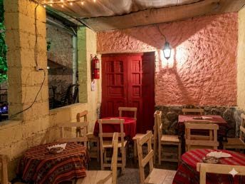

Turistas
Viajeros de todo el país y del exterior que llegan a la Quebrada de Humahuaca buscando una experiencia gastronómica auténtica.
Somos una casona de Humahuaca donde la cocina regional se sigue haciendo como en casa.

[Completar con la historia de la casona y de quienes la llevan adelante.]
Viajeros de todo el país y del exterior que llegan a la Quebrada de Humahuaca buscando una experiencia gastronómica auténtica.
Gente de Humahuaca y de otras localidades de Jujuy que busca cocina regional de confianza durante todo el año.